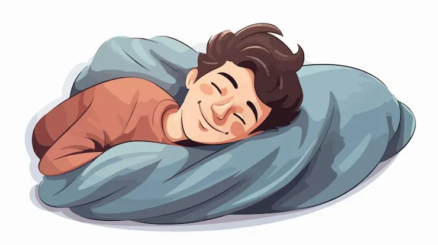

Section Two
Slumbering & Dreaming
What the sleeping mind conjures in the dark — the science and wonder of the nocturnal dream state.

💤 deep in the dream cycle 💤
The Sleep Cycle
Each cycle is ~90 minutes and repeats 4–6 times per night.
Tap a stage.
😴
Light Sleep
The threshold between waking and sleep. Hypnic jerks occur here — that sudden falling sensation that snaps you back to consciousness. Brain waves slow from alert beta to relaxed theta.
Types of Dreams
Lucid Dreams 🎮
The dreamer becomes aware they are dreaming and can sometimes exert control — with documented correlates in gamma wave activity.
Recurring Dreams ♻️
Dreams that repeat across weeks or years — often processing an unresolved emotional situation or persistent anxiety.
Prophetic Dreams 🔮
Dreams that seem to predict real events — more likely cognitive pattern-recognition than supernatural foresight.
Nightmares ⚡
Distressing dreams that fully wake the sleeper, most common in REM sleep. Often linked to stress, trauma, or certain medications.
"A dream doesn't become reality through magic; it takes sweat, determination, and hard work."
-Colin Powell